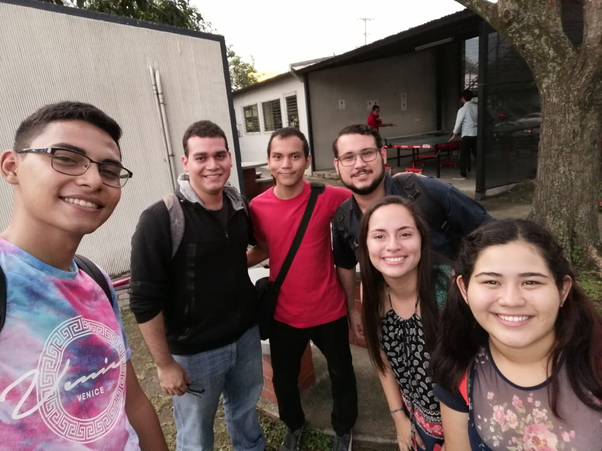
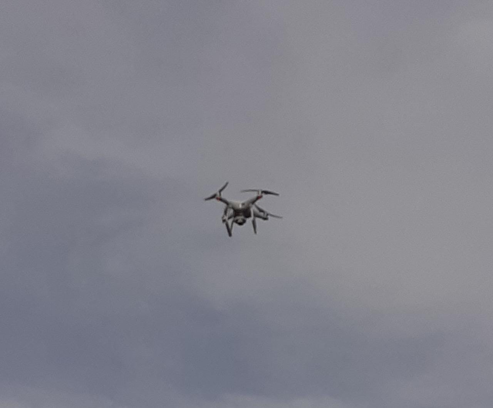

Una visión perversa
Historia de la UCA
La Universidad Centroamericana “José Simeón Cañas”, conocida como UCA, fue fundada en septiembre de 1965, en el contexto del optimismo de la década del desarrollo.
Un grupo de ciudadanos católicos se acercó al Gobierno y a la Compañía de Jesús para promover el establecimiento de una segunda universidad. Querían crear una alternativa a la Universidad de El Salvador para formar profesionalmente a los egresados de los colegios católicos.
La universidad concebida por este grupo de personas era privada, con capital y acciones, y orientada a satisfacer las demandas de una educación profesionalizante de una elite. Consideraban que una universidad católica concebida en estos términos contribuiría en gran medida al avance cultural del pueblo salvadoreño. Para matizar el elitismo, proponían ofrecer algunas becas.
¿Cómo salvamos la UCA?
El lunes comenzó como cualquier otro día,
pero pasó algo muy raro en clases, nos mostraron un video de un tal
Ale Rav que quería destruir la UCA, obviamente a todos nos asustó esta noticia
aunque ese Ale Rav quería convencernos de que no era algo tan malo, sino que lo veía
como la salvación y que nos iban a regalar el título. Pero nosotros no nos ibamos a
vender con algo así.
Inmediatamente nos pusieron a escuchar un audio de Kurt, alguien que había descubierto
el plan de Ale Rav, pero él necesitaba nuestra ayuda, él sólo no podría salvar la UCA.
Así que con nuestros compañeros decidimos ayudarlo, escaneamos el código para obtener el
mensaje secreto de Kurt. Nos pedía realizar una función que verificara si los DUI de una base
de datos estaban correctos, debíamos seguir un algoritmo.
Ya en mi casa traté de hacer la función, en el algoritmo nos pedía sacar la posición de cada número,
luego sumar la multiplicación de cada número con su posición, después al número 10 restarle el módulo 10
de la suma anteriormente realizada y ese verificarlo con el último dígito.
Lo que hice fue sacar diferentes variables para realizar las operaciones y finalmente que verificara si
estaba bien la función. Al hacer varias pruebas devolvía el valor TRUE. Uff! Pude resolver el primer
ejercicio y ver la cantidad de DUI estaban correcots en la base de datos.Pero al terminar la función recibí otro mensaje tu Kurt hablandonos de su amiga Ada Jarvis, que
también involucrada y había descubierto algo, el mensaje era un tanto extraño, pero sabía que el
martes debía dirigirme al polideportivo para encontrar ese mensaje de Ada Jarvis.

El martes nos tocó ir al polideportivo, así como Kurt nos mandó
Al resolver el acertijo que Ada Jarvis dejó entendíamos que teníamos
que ir a las mesas de cemento donde se juega ajedrez y ¡ahí estaba el
código de ese día! Al escanearlo vimos el mensaje de Ada, ella también
estaba asustada por lo que Ale Rav estaba tramando, tanto que le tocó
destruir su computadora para que no la descubrieran.
Ella nos propuso que resolvieramos un ejercicio acerca de triggers, eran
2 triggers, en los cuales dentro de una función llamada representa_trabaja
se pudiera ver la relación que existía entre los miembros y el departamento
para el que trabajan, y la otra que es en seentido contrario para los que son
representantes del departamento. Por lo tanto, una persona que sea representante
de un departamento no puede trabajar para otro departamento. Así que tuve que crear
realizar la función y también los 2 triggers, el primero si representa debe trabajar y
el otro si representa no cambia de trabajo.
Al probar con algunas consultas pude ver que estaba correcto. Y al terminar como era de
esperar recibí otro mensaje de Kurt que me pedía que el miércoles fuera a buscar a un tal
Renacho Melgar abajo de las D.

Al ir abajo del edificio de las aulas D y encontrarnos con Renacho nos dio el código QR a escanear.
Pude ver en el mensaje que Kurt nos dejó que estaba muy asustado, y había un audio el cual nos explicaba
un poco sobre su relación con Ale Rav, que fue su catedrático y hasta su intructor, hablaba hasta de un chip
que se implantaron, pero lo que más me sorprendió fue que Kurt vio un código de detonación, Ale Rav iba a poner
bombas en la universidad y teníamos que detenerlo.
El desafío de Kurt para ese día ya fue un poco más complicado
que los demás pero no imposible. Necesitaba que hicieramos una función y un trigger que la ejecute, en si
teníamos que ver si al insertar información en la tabla miembro se compruebe la coincidencia del departamento
con la existencia de ese miembro en la subclase correcta, y si no está se debe rechazar la inserciòn.
LO siguiente era que al actualizar el atributo del departamento de miembro debe moverse al miembro de la subclase que
corresponde. Al finalizar la función llamada miembro subclase trabaja y realizar los triggers respectivos recibí otro
mensaje de Kurt que nos decía que Ada pudo escribir un código para desactivar el proceso de detonación que Ale Rav había hecho
y lo ejecuté en mi computadora.
Este fue un día un poco raro, nos sacaron a todos del salón de clases
y de la nada vimos en el aire como un dron venía en el cielo hacia nosotros,
aunque se podía observar que traía algo en él, sí era el código que Kurt nos
había mandado para ese día.

Con mis compañeros pudimos ver el mensaje de Kurt y realmente estaba algo fuerte,
ya que ponía en riesgo su vida y teníamos que ayudarlo. Lo que nos dejó que revisaramos
fue lo siguiente: Nos habló de la especialización de proyectos y nos pidió que revisaramos que
Como es disjunta hay que asegurar la independencia de los miembros de subclases de proyectos, y también la eliminación en la superclase tras el borrado en la subclase.
Como la especialización no es total, en este caso sí puede haber objetos solamente en la superclase, pero atención, éstos deben tener código de tipo 'O' o se deberá rechazar la inserción, también se debe validar con los otros códigos que los objetos deben estar previamente en las subclases correspondientes, o se debe rechazar la operación. Por suerte ya hay un trigger que impide el ingreso de un proyecto cuyo código no sea válido, así que nos podemos ahorrar ese trabajo.
Ahora a partir de eso tuvimos que hacer una función que cuando la elimine a algún elemento de las subclases lo eliminen automáticamente de la superclase,
otra que dado que la especialización es disjunta, garantice que no pueda existir el mismo objeto en más de una subclase
y por último una función para comprobación de que los proyectos están siendo introducidos en la subclase correcta. Es importante notar que aunque la especialización es parcial, si los proyectos son de tipo Web, Venta_almacen o ERP, deben ser a la vez introducidos en la subclase correspondiente y en proyecto, como si fuera total. Para ello debe tomarse en cuenta que los respectivos FK de las subclases a la superclase son diferibles
Este fue el último día y creo que el más impactante para todos.
Al inicio del día recibimos un mensaje de Kurt que lo vieramos en la magna V porque iba a decirnos la
identidad de Ale Rav para que fueramos a poner la denuncia todos juntos, pero cuando noe estaba dando
las gracias por ayudarlo... Murió... Pero entre sus papeles tenía el último código, que nos llevaba a
un enlace, en el cual pudimos ver la identidad. Y era nada más y nada menos que ¡¡VARELA!!
Todos estabamos muy tristes ya que lastimosamente Kurt no pudo salir con vida, pero pudimos poner la
denuncia en contra de Varela, fue un final muy triste para Kurt, pero él confio en nosotros y debe estar
orgulloso de que pudimos salvar a la UCA.